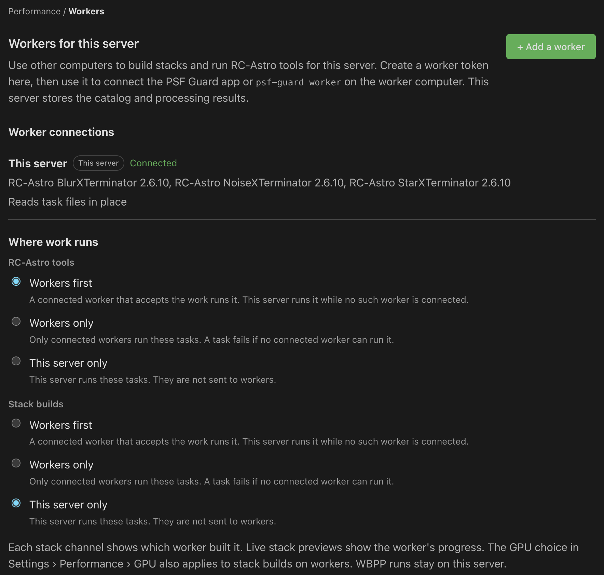

Run processing on workers
Use another computer's GPU, processor cores or RC-Astro licenses while the server keeps the catalog and results.
Workers run channel and mosaic stack builds, or BlurXTerminator, NoiseXTerminator and StarXTerminator. WBPP runs stay on the server. Install the same PSF Guard release on the server and each worker. RC-Astro tasks also need the tools, models and licenses on the worker.
Add a worker
You need an editor account on a server that allows database management.
- On the server, open Settings → Performance → Workers and click + Add a worker.
- Enter a worker name and click Create token. Copy the token; PSF Guard shows it only once.
- On the worker, run the shell or PowerShell command shown by Settings. Replace
THIS-SERVER:PORTwith the server's network address when the command contains that placeholder.
PSF_GUARD_WORKER_TOKEN=psfw_… psf-guard worker --server http://192.168.1.10:3000Leave the process running. Ctrl-C stops the worker and returns unfinished tasks to the server's queue. --work stack accepts stack builds only; --slots N allows 1–16 concurrent tasks. Start with one for GPU work. Workers that only stack need no RC-Astro installation.
Choose where work runs
Under Where work runs, choose stack-build and RC-Astro policies independently: Workers first, Workers only or This server only. With Workers first, this server handles a task when no suitable worker is connected. With Workers only, the task fails if no connected worker can run it. Stack builds stay on the server unless you change this choice. The channel card shows which worker stacked it; its Live stack image follows the worker's progress.
Task files transfer through the server by default. A worker can use shared storage with --files shared when both computers can access the required folders. Each worker uses its own CPU and memory limits. Changing the server’s limits does not change those limits on workers.

Run a worker from the app
- On macOS or Windows, open Settings → Performance → Workers → Worker on this computer.
- Enter Server address and Worker token. Leave Worker name blank to use the computer's host name.
- Select Stack builds, RC-Astro tools or both under Task types, and choose Concurrent tasks.
- Optionally select Start worker at login. Click Save worker settings, then Start worker.
The worker continues in the menu bar or system tray after you close the window. Pause worker stops new requests while current tasks finish; Stop worker returns unfinished tasks to the queue. After editing settings, save and click Restart worker. Leave Worker token blank to keep its saved value.
Start a worker before login
Windows: save settings in Worker on this computer, turn off desktop login startup and stop the desktop worker, then run psf-guard-cli worker-service install in an administrator PowerShell. Run it again after saving new settings or updating PSF Guard. The service uses its own copies of the app and settings; desktop controls do not control it.
Linux: the RPM and Debian packages install a psf-guard-worker systemd service without enabling it. Set the address and token in /etc/psf-guard/worker.conf. On Debian, first copy /usr/share/doc/psf-guard/worker.conf.example there with permissions that only root can read. Start it with:
sudo systemctl enable --now psf-guard-worker
journalctl -u psf-guard-worker -fFor shared storage, path mappings, service accounts, GPU setup and recovery, read the full worker guide.